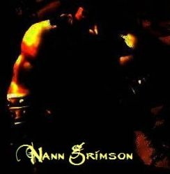

Folgar
Age : 30
Sexe : Homme
Race : Troll
Faction : Horde
Formation : Chaman
Description : Modeste Troll des glaces venant des glaciales montagnes naines de Dun Morogh,il vécut toujours caché,au fin fond de ces montagnes,là ou seul les membres du clan des sept neiges ont accès.Il apprit là une formation de guerrier notoire,mais il ne fut point passioné par cela.Un jour,des nains découvrirent leur caverne,et le clan des sept neiges fut extérminé,malgré la guerre qui sévit pendant plus d'une année.Lui,se battait bien,mais n'était pas aussi brutal qu'un vrai guerrier.Le clan des sept neiges n'avaient aucune conaissance des arts chamaniques depuis l'assassinat de son réel chef,le chaman Tymiion Icewind.Il fut en vérité assassiné par un vicieux voleur ayant funestement pactisé avec les nains pour trouver une place glorieuse dans leurs rangs.Ce voleur là était Zar'Amont Farius,le frère même de Folgar.Zar'Amont,après avoir révélé l'emplacement de la grotte,fut tué à quelques coups de hache.Les Farius ont toujours été d'une racine très naïve,mais bon,personne n'est parfait.A sa fuite,il a été receuilli par des orcs éclaireurs dans les Wetlands,et pri un long voyage vers Durotar,là ou il vut son véritable destin apparaître.
Plus d'infos sur Folgar >>>Lire les 2 récits de Folgar >>>
Honn
Age : à peine 65 ans.
Sexe : Homme
Race : Elfe
Faction : Alliance
Formation : Prêtre
Description :
Honn Dar Nadris est un elfe comme les autres avec un caractère sérieux et plutôt modeste,il a hérité de la solitude et la mystériosité de la famille
Dar Nadris.Il est né dans Reflet-De-Lune,son père était druide,
Noã Dar Nadris,et sa mère une séduisante chasseresse éxperimentée et belle,
Ha-Nihila Dar Nadris.
Plus d'infos sur Honn >>>Lire le récit de Honn >>>
Nann
Age : 13 ans
Sexe : Homme
Race : Nain
Faction : Alliance
Formation : Guerrier
Description : petit nain ( nabot ) de treize ans,Nann est le benjamin des Grimson,une des familles naines assez bien réputées en Azeroth.Quand Nann avait encore neuf piges,son père,Grimmer Grimson,dit "Le Marteleur",partit en guerre à Northrend,au nom de l'alliance.Quelques mois après la Garde Millitaire d'Ironforge déclara légalement Mort Grimmer Grimson,qui fut disparu en terres de Northrend,près d'Icecrown ... Après cet évènement tragique,Nann Grimson entra dans l'Ecole du Combat d'Ironforge et apprit les bases du combat armé.Quelques années plus tard,il sortit de cette école pour servir Dun Morogh auprès de son cousin germain à Anvilmar ...
Plus d'infos sur Nann >>>Lire les 3 récits de Nann >>>